Investor capital to startup tranche, released by Stripe MRR ZK proof.
This report captures the complete Pact mechanics in the live local dashboard: investor creates an investment pool, founder places a startup, founder applies, investor approves and funds a milestone program on Stellar testnet, founder connects Stripe, generates a Groth16 revenue proof, and receives an automatic smart-contract tranche release.
34080fa7-c418-47b5-89aa-ce92258fb38b0xead23e14d803...f37d8f51b81bScenario Map
Every step below is backed by a persisted database record, a real Stripe test-mode connector result, a local Groth16 proof job, or a Stellar testnet transaction.
Business Objects
Investment / 250000 USDC
Fintech / private revenue proofs / Seed
64a174f2-1b33-40e5-95c1-28dc0fe6570f250000 USDC to founder wallet
Proof Receipt
Mode: test
Account hash:
0x383e3b0d5096...30d954f6e4c08415888b-6cf1-4987-bd74-62a959f18745Threshold: 1000000 usd
Result: passed
bae1890d-7b08-4436-81ef-47c8e107e6c8VK:
0x41675206197a...e853615c93d0Digest:
0x72550e6dab77...4c1ee78cefecStellar Testnet Transactions
These are the actual Soroban transactions recorded during this scenario. Each row links to Stellar Expert testnet explorer.
| # | Operation | Transaction hash | Recorded at | Explorer |
|---|---|---|---|---|
| 1 | Create escrow program ProgramCreatedOnChain |
0x384c47c7d44c...0107539e0301 |
2026-07-03T14:20:31.935Z | Open in Stellar Expert |
| 2 | Add M1 tranche TrancheAddedOnChain |
0xbee011318593...678cb862c15a |
2026-07-03T14:20:39.849Z | Open in Stellar Expert |
| 3 | Fund escrow with demo SAC asset EscrowFundedOnChain |
0x145a2344b1ca...2544717e2289 |
2026-07-03T14:20:45.291Z | Open in Stellar Expert |
| 4 | Activate funded program ProgramActivatedOnChain |
0xf6af69f57d85...609507228e46 |
2026-07-03T14:20:50.600Z | Open in Stellar Expert |
| 5 | Set verifier mode to Groth16 digest VerifierModeSetOnChain |
0x8af07da39475...1fa81f97e185 |
2026-07-03T14:25:11.334Z | Open in Stellar Expert |
| 6 | Activate eligibility policy EligibilityPolicyActivatedOnChain |
0x22e99e7d8396...cb048b0326cd |
2026-07-03T14:25:15.270Z | Open in Stellar Expert |
| 7 | Activate eligibility root EligibilityRootActivatedOnChain |
0x51bce17d451b...43312094caf8 |
2026-07-03T14:25:20.529Z | Open in Stellar Expert |
| 8 | Submit eligibility digest attestation EligibilityProofSubmittedOnChain |
0xf766a8607d36...7dba5b6f9f08 |
2026-07-03T14:25:25.913Z | Open in Stellar Expert |
| 9 | Activate milestone policy MilestonePolicyActivatedOnChain |
0xee574751fc2a...67dbd14b0664 |
2026-07-03T14:25:31.238Z | Open in Stellar Expert |
| 10 | Activate Stripe snapshot root MilestoneRootActivatedOnChain |
0xf567afdfe1c0...28215ec7dd73 |
2026-07-03T14:25:36.529Z | Open in Stellar Expert |
| 11 | Submit MRR proof digest attestation MilestoneProofSubmittedOnChain |
0xd9a99746e97b...6c59bae3721f |
2026-07-03T14:25:40.180Z | Open in Stellar Expert |
| 12 | Release tranche to founder wallet TrancheReleasedOnChain |
0xead23e14d803...f37d8f51b81b |
2026-07-03T14:25:45.874Z | Open in Stellar Expert |
Visual Walkthrough
Screenshots were captured from the authorized Chrome session against localhost:3000 and the local API on localhost:4000.
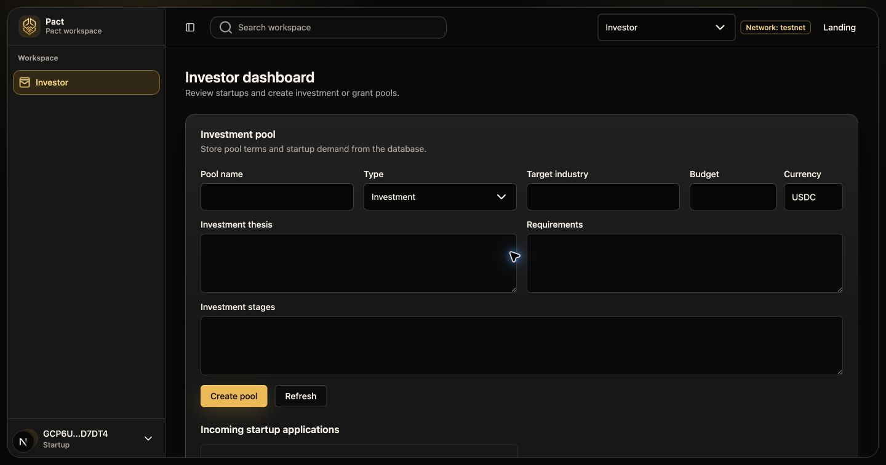
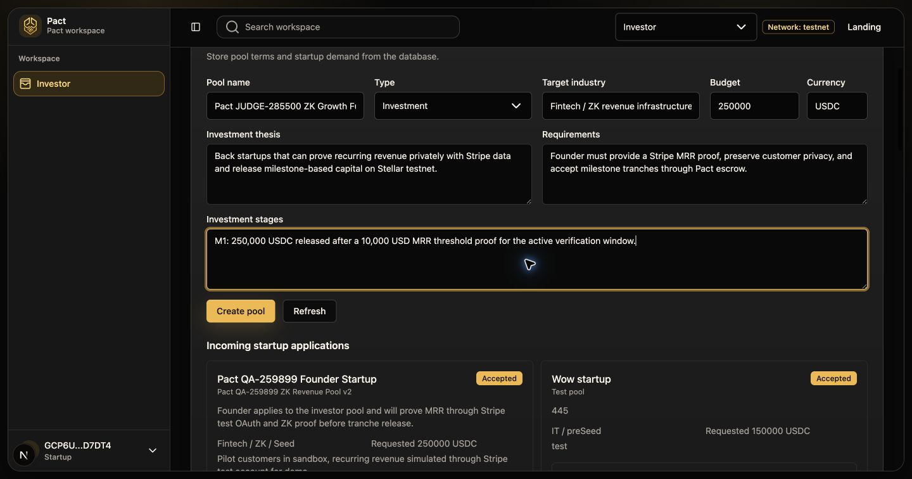
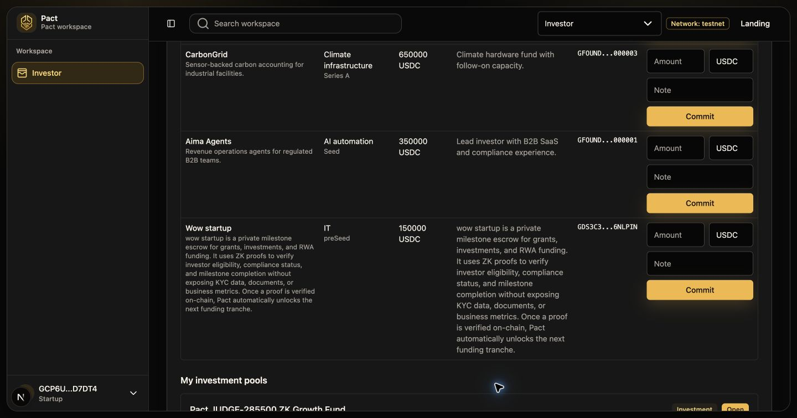
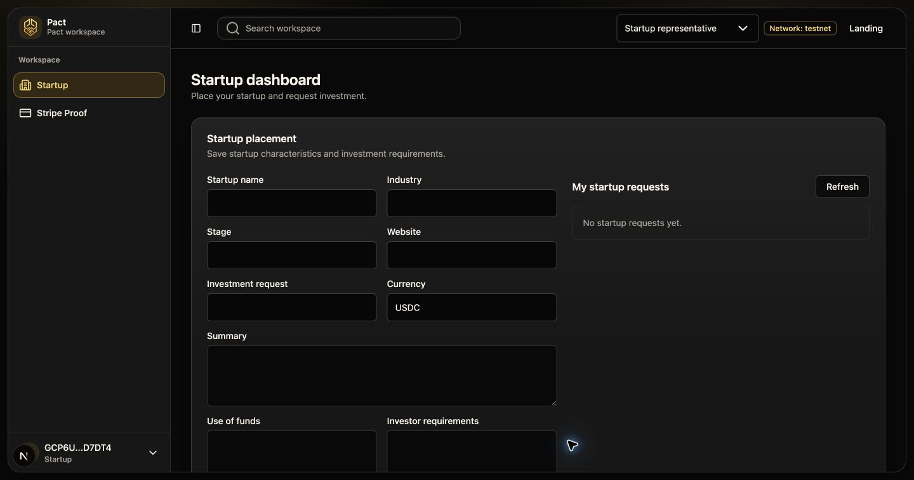
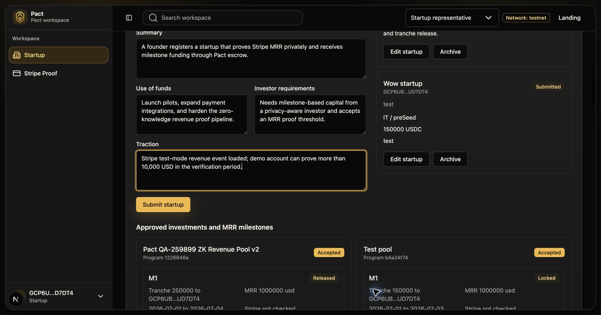
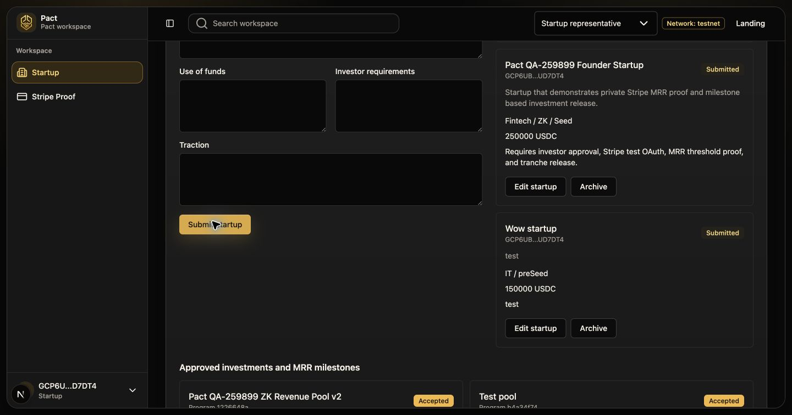
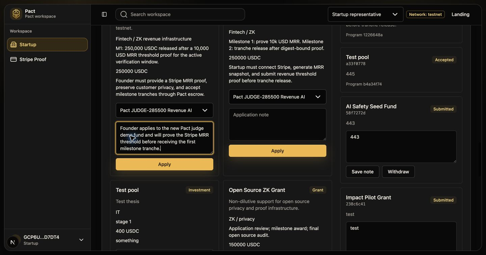
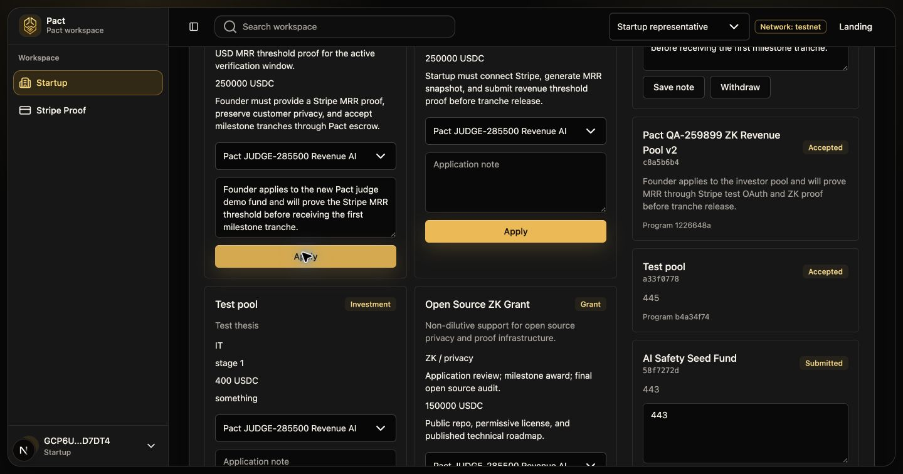

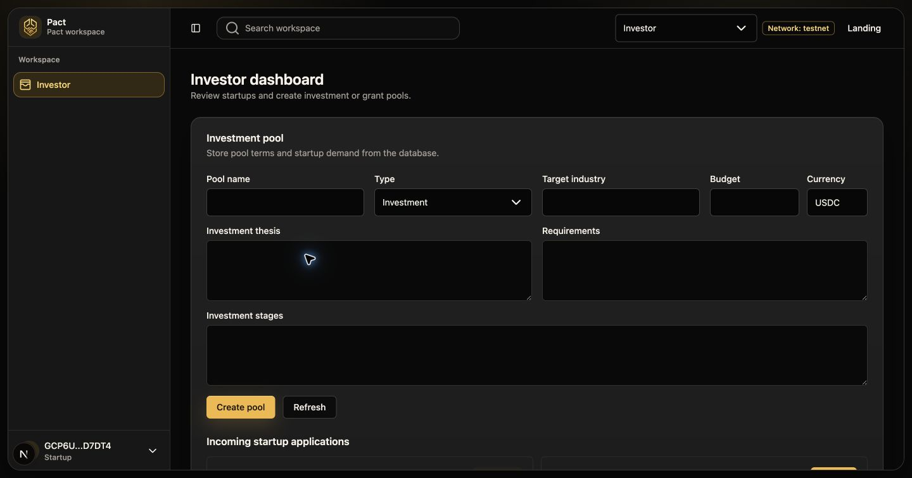
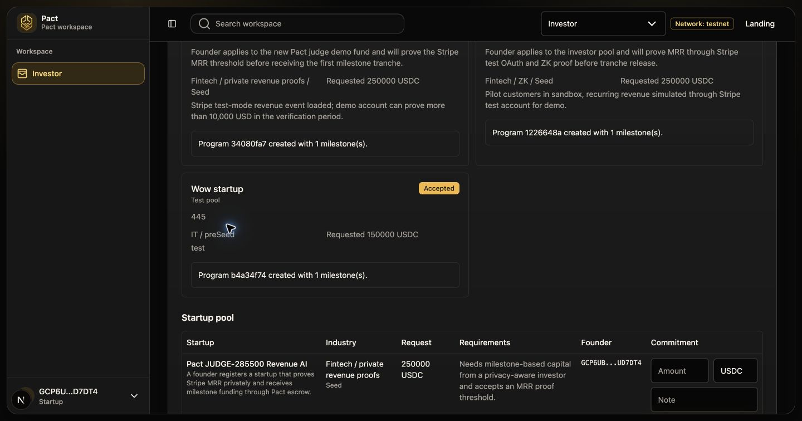
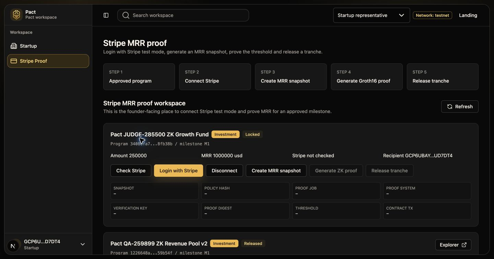
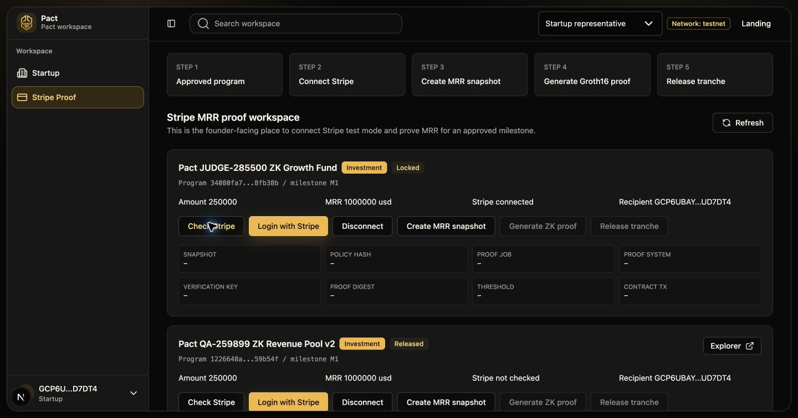
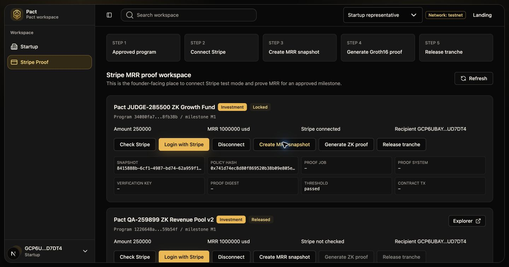
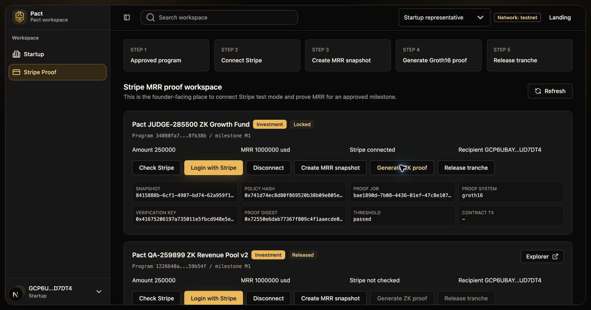

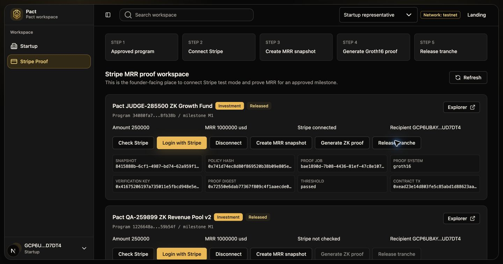
Final Verification
Program: Active
Tranche: Released at 2026-07-03T14:25:45.975Z
Release tx:
0xead23e14d803fe5c85abd1d88623aa1466c3ed392da61da75529f37d8f51b81bDemo SAC recipient balance after release:
500100Asset contract:
CDPIXI6CEJ7J...PMH2FXVQGenerated on 2026-07-03 from Pact local dashboard, Neon-backed API data, Stripe test-mode connector records, local Groth16 proof output, and Stellar testnet contract events.